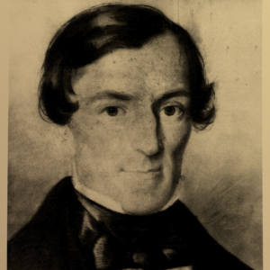

Chapter VII: Ones and zeroes
No 9000 computer has ever made a mistake or distorted information.
Machina ex deus (sive Natura)
In Ionian Ancient Greek,
μηχᾰνή
refers to any mean to an end
— be it a device, a set of devices, a routine, a methodology;
anything, material or not, that connects the causa finalis
with the expected effect.
It gave the English mechanics for instance.
The Dorian variant of μηχᾰνή
is μᾱχᾰνᾱ́ .
It gave the Latin: machina
— which preserves the Greek meaning
but has a slightly more technological connotation.
Machina gave the French machine. English borrowed it from French.
Machine means:
a thermodynamic system that uses power to apply forces and control movement to perform an action.
Notice that this definition applies to you and me.
In Latin, purus or putus
is an adjective meaning pure or clean.
It gave the verb puto, putare
meaning to trim,
or less frequently, but etymologically consistent:
to cleanse, to purify.
Puto, putare then acquired several figurative meanings; one of which: to reckon.
The preposition cum means with. It gave the prefixes co-, con- and com- (same meaning).
Com- and puto, putare form the verb computo, computare,
meaning to reckon together, to calculate.
It gave the English verb to compute
(same meaning: basically to solve an equation).
Which gave the substantive:
Computer — meaning: someone or something that computes. A computing machine.
The oldest known one is called: brain.
It's a sub-system in a complex machine with convoluted and nested feedback loops.
The digestive and respiratory sub-systems form a generator that converts potential energy into electro-chemical energy.
The cardiovascular sub-system is a power supply that uses mechanical energy to feed peripherals.
One of them is the brain.
It uses the electro-chemical energy to process data from interfaces called sensory organs.
The brain is part of the nervous sub-system which sends movement instructions to peripherals called muscles.
The movement of the muscles notably allows to refuel the generator.
The semantics of radicalism...
Let's agree on:
from now on, computer implies artificial,
as in human-made
— but not the way babies are made — game over,
try again.
The radicalism of semantics...
Let's agree on:
from now on, computer implies manufactured
— from Latin manus: hand.
The invention of computers happened
at a vertiginous celerity.
19th
century's most advanced computer
was mechanical and hand-activated.
Barely a hundred years later,
computers would have evolved
to electrical analogue computers,
to electrical digital tube computers,
to electrical digital solid-state computers.
This period of History is too fascinating to be ignored
— and too dense for this chapter.
Let me drop a few names and trust your curiosity.
Ada Lovelace & Charles Babbage, Alan Turing, Grace Hopper and of course legion others.
George Boole, Harry Nyquist and Claude Shannon are not on the list. Let's talk about George Boole.

I've finished Aristotle's Organon and thought
this could only happen once — and it's over.
Then I met George Boole. (Let's ignore Francis Bacon.)
He published
The Mathematical Analysis of Logic
in 1847.
Read it. It's amazing. Do what you want.
But you want to read it.
He found a way to express the axioms of logic
and the rules of syllogistic in mathematical form.
Instead of inventing symbols like Leibniz did for Calculus,
he used extant algebraic ones
and reduced their set to the very minimum.
He opens the first chapter with
Let us employ the symbol $ 1 $, or unity,
to represent the Universe.
So 1 is everything and 0 is nothing.
Then, for instance:
$ \ 1 \, + \, 0 \, = \, 1 \ $
is the principle of excluded middle.
Isn't it pure genius?
A full chapter of Aristotle in the simplest possible equation!
He calls election
what I would call something like
set intersection
and represents it with multiplication.
Then $ \ x \cdot y \ $ means
all members of $ X $ that are also members of $ Y $.
Then $ \ x \cdot 1 \ $ means all $ X $ in the universe.
Or $ \ 1 \, - \, x \ $ means everything that is not $ X $...
so $ \ \operatorname{NOT} \, X \ $ or
Or $ \ y \, (1 \, - \, x) \ $ means all $ Y $ that are not $ X $.
Then: $ \ y \, (1 \, - \, x) \ = \ 0 \ $
means
$ \bigl\{ \ [ Y $ that are not
$ X ] \ $is$ \ [ $nothing$ ] \ \bigr\} \ $,
so no $ Y $ is not $ X $, so all $ Y $ are $ X $.
$ \iff\quad $ all $ Y $ in everything are all $ Y $ in $ X $, so all $ Y $ are $ X $ indeed.
For this last expression not to break logic,
division must be forbidden.
Otherwise $ \ y \ = \ y \, x \quad\iff\quad x \, = \, 1 \ $
which is not necessary.
Just because a set contains a smaller set doesn't mean the bigger one is everything (all pigeons are birds, yet not everything is a bird).
Then $ \ x^2 \, = \, x \cdot x \ $
means all $ X $ that are $ X $,
a tautology that reduces to all $ X $,
so $ \ x \cdot x \, = \, x \ $
and by extension: $ \ x^n \, = \, x \ $.
Then $ \ v \, = \ x \, y \ $
means $ V $ are the $ X $ that are $ Y $
or the $ Y $ that are $ X $;
if we assume $ v $ is not zero then it means
some $ X $ are $ Y $ or some $ Y $ are $ X $.
We can express syllogisms this way:
-
$$ x \ = \ x \, y \quad\longrightarrow $$ - all $ X $ are $ Y $
-
$$ z \, y \ = \ 0 \quad\longrightarrow $$ - $ Z $ that are $ Y $ or $ Y $ that are $ Z $ is nothing: no $ Z $ is $ Y $ or no $ Y $ is $ Z $
- then:
- $ z \, y \, x \ $ means $ X $ that are $ Y $ and $ Z $, but no $ Y $ is $ Z $, so $ X $ that are nothing,
- so:
- $ z \, y \, x \ = \ 0 $
- then:
- $ y \, x \ = \ x \quad\iff\quad z \, y \, x \ = \ z \, x \quad\iff\quad z \, x \ = \ 0 \ $ therefore no $ Z $ is $ X $.
Ignore my comments, just apply traditional arithmetic rules, you'll get the same conclusion.
In Aristotelian plain-word syntax:
Lacedaemonians are men. No god is a man.
Therefore no god is a Lacedaemonian.
Lacedaemonian is $ X $, man is $ Y $,
god is $ Z $.
or:
Men can trip on airplanes. Islands cannot.
No man is an island.
I'm not reproducing the full book (unless you insist).
So check the source or trust me:
the full Organon can be re-written with:
plus, minus, times, equals, zero, one
— and arbitrary symbols for subjects and predicates.
The very same week,
Augustus De Morgan
published
Formal logic.
It shares Boole's attempt: turn logic into algebra.
Boole's elegant radicalism prevailed.
But De Morgan, thanks to the
De Morgan's law,
still contributed to modern Boolean algebra.
The
Boolean domain
is basically what George Boole built in
1847.
It can express the logical operator
$ \operatorname{AND} $ with multiplication,
and $ \operatorname{NOT} $ with $ \ (1 - x) \ $.
De Morgan, using his own notation, found $ \operatorname{OR} $.
As in $ X $ or $ Y $ or both.
$ X $ or $ Y $ but not both is called
$ \operatorname{XOR} $ (exclusive $ \operatorname{OR} $).
How did he do?
Let's define $ Z $ as everything that is neither $ Y $ nor $ X $ — that is: $ \bigl\{ \ (\operatorname{NOT} \, Y) \ \operatorname{AND} \ (\operatorname{NOT} \, X) \ \bigr\} $:
Now the negation of $ Z $ is $ \bigl\{ \, $ everything that is either $ Y $ or $ X $ or both $ \, \bigr\} $ (no extra case) — which is what we're looking for.
Let's call it $ W $:
$ W $ is:
$ \Bigl\{ \ $ everything that is not $ \; \bigl[ \, ( $ everything that is not $ Y ) \; $ and $ \; ( $ everything that is not $ X ) \; \bigr] \ \Bigr\} $
Apparently this is equivalent to: $ W $ is $ Y $ or $ X $...
funny how uncertainty becomes impractical
in a language optimised for truth.
Let's say $ Y $ is Farfisa Compact,
then $ \ 1 \, - \, y \ $ is everything that is not
Farfisa Compact,
including Vox Continental.
But now $ X $ is Vox Continental,
then $ \ 1 \, - \, x \ $ is everything that is not
Vox Continental.
Now $ \ (1 \, - \, y) \, (1 \, - \, x) \ $
is the intersection of these two sets,
so it can be anything as long as it's neither
Farfisa Compact nor
Vox Continental (nor
both).
So $ W $ is $ \
\Bigl\{ \
\operatorname{NOT} \,
\bigl( \;
\operatorname{NEITHER} \;
$Farfisa Compact$ \
\operatorname{NOR} \;
$Vox Continental$ \
\operatorname{NOR} \; $both$ \;
\bigr) \
\Bigr\} \ $.
Negation of negation is affirmation, so
$ \ \operatorname{NOT \; NEITHER} \; = \; \operatorname{EITHER} \ $
and
$ \ \operatorname{NOT \; NOR} \; = \; \operatorname{OR} \ $.
So $ W $ is $ \
\bigl\{ \;
\operatorname{EITHER} \;
$Farfisa Compact$ \
\operatorname{OR} \;
$Vox Continental$ \
\operatorname{OR} \;
$both$ \;
\bigr\} \ $.
In this example, both
is an empty set.
An empty set is a set.
Use e.g.
mammal and
able to fly
(or swim
or whatever)
if you don't like empty sets.
This reads: all $ X $ plus all $ Y $
minus all $ X $ that are $ Y $
(or $ Y $ that are $ X $),
$ xy $ is part of $ x $ and $ y \ \longrightarrow \ $
remove it once or get it twice.
Powerful, no doubt. But a bit convoluted.
Modern Boolean algebra kept 0 and 1,
but instead of everything and nothing,
they now typically mean (respectively) false and true
(although not necessarily).
And the operators
$ \operatorname{AND} $, $ \operatorname{NOT} $ and $ \operatorname{OR} $
are used explicitly or with the symbols:
$ \ \land (\operatorname{AND}) \
\lnot \, (\operatorname{NOT}) \,
\lor (\operatorname{OR}) $.
These operators can be combined to obtain new ones like
$ \operatorname{XOR} $, $ \operatorname{NOR} $, etc.
Now how do we make a machine with this?
It turns out that the dichotomy
It's called a switch, or an interrupter. There's one on your phone.
It has two positions:
open :- disconnects the circuit.
closed :- allows current to flow.
It also turns out that most tubes and transistors
can act as voltage-controlled, or current-controlled,
interrupters.
Also, as we've seen, capacitors can store voltage.
So a network of transistors, each paired with a capacitor,
can route and store voltage.
The discharge of a capacitor is exponential,
so zero is never actually reached.
We need a threshold.
Then a low enough voltage means 0, otherwise it's 1.
Serial wiring gives $ \operatorname{AND} $,
parallel wiring gives $ \operatorname{OR} $,
and $ \operatorname{NOT} $ is simply an inverter.
When a transistor receives the prescribed current or voltage, it switches.
And its capacitor charges or discharges accordingly.
The electrical signal becomes a binary discrete signal.
The manier instances of transistor/capacitor pairs,
the more binary data.
But the charge and the discharge of a capacitor are not instantaneous.
So computing this data takes a non-negligible time
(no more speed of light).
(Keep that in mind.)
I've written this paragraph relying on intuition more than sources.
I might have let imprecision or even error slip in.
If so, please correct me.
Ok wonderful:
we have a convoluted polycephalous interlacement
of true and false qualifying...
Qualifying what exactly?
When all is one and one is all
Enter Gottfried Leibniz (again — this guy's all over the place).
I've never met him.
But I feel relatively safe writing: he liked numbers.
He also liked god very very much.
In fact he thought god was literally number 1.
(All this time wasted being a sucker at metaphysics...
maths could be two centuries in the future right now.)
Omnibus ex nihilo ducendis sufficit unum...
There's zero, and there's one
— ergo god created the Cosmos ex-nihilo.
Makes sense now. Thanks Gottfried.
So god is the Heavside step function.
Then the Dirac δ function created god.
Then Paul Dirac created the creator of god?
Or step is opus dei and δ is god?
Then Paul Dirac created god?
Next time: maybe think twice before inventing Calculus...
Also:
ἔκ τε γὰρ οὐδάμ’ ἐόντος ἀμήχανόν ἐστι γενέσθαι
καί τ’ ἐὸν ἐξαπολέσθαι ἀνήνυστον καὶ ἄπυστον·
αἰεὶ γὰρ τῆι γ’ ἔσται, ὅπῃι κέ τις αἰὲν ἐρείδηι.
... right?
How about we stick to mathematics?
I guess you find inspiration in whatever inspires you.
There probably wouldn't be a
Passacaglia & Fuge
c-moll
bwv 582
if not for the logical fallacy known as
holy trinity ($ 3 \, = \, 1 $)...
(( I also guess mysterious ways means contradiction in the terms. ))
... or maybe you knew all along exactly what you were doing...
Pinciple of sufficient reason:
- accept it or reject all science;
- accept it and reject free will.
I mean, it's not like you were dumb, you naughty Saint-Judas.
How about we stick to mathematics?
Leibniz came to question the legitimacy of base 10:
the fact that we use ten symbols to write numbers:
0, 1, 2, 3, 4, 5, 6, 7, 8, 9.
With a spirit reminiscent of what his predecessor René Descartes had done to knowledge, or announcing what his successor George Boole would do to logic, he sought the irreducible principle of numbers.
Turns out one symbol is not enough.
But you can express any integer with just
zeroes and ones
(or any pair of symbols).
We'll expand on binary arithmetic in this chapter's appendix.
What matters here is that we've found a utility
to our network of automated interrupters:
they can store and process numbers.
These numbers are arrays of binary states.
Each instance in the array is called a
binary digit,
often shortened as bit.
Bits are sometimes called shannons (Sh)
to emphasise their quality of measuring unit.
Many many many things can be represented with numbers, so guess what: computers are powerful.
Amongst these things: voltage.
Devices called
analogue to digital converters
(ADC) receive an analogue signal (voltage)
and quantize it as a series of bits.
How many bits does this process require?
Ideally: an infinity (Quantum physics might argue).
Remember Calculus:
the more infinitesimal the differential gets,
the more accurate the integration.
Try building a circle with straight lines.
The smaller the lines, the rounder the circle,
but also the manier the lines.
More bits doesn't mean higher quantized voltages
(amplitudes are normalised to 1 — in code at least),
it means more precise quantization.
The number of bits available to quantize an analogue signal
or process a digital signal
is called resolution, or bit-depth.
It's usually a compromise between human hearing capabilities
and machine computing capabilities
(early 2000's
mp3 players were computing machines...).
For instance, in
Ieee 754
double-precision 64-bit floating-point,
there are 11 exponent bits
(allowing order of magnitude switch and therefore floating point),
1 sign bit (basically simplifying arithmetic with negative numbers)
— so 52 bits are left,
plus one hidden bit:
the leading one being always 1,
it can be assumed and leave its place.
So 53.
So 2⁵³ possible values to divide
$ \ 0 \, $dBFS$ \; = \; 1 \ $.
So:
The human hearing ranges from 0 dB SPL
to the
pain threshold
around 130 dB SPL.
So 64-bit FP reduces the noise floor
to more than twice as quiet as we can hear.
We need this extra headroom for dynamic mixes.
Not in the final bounce.
Which is why 24-bit is sometimes labelled
HD audio — it's not fraud:
Pretty much our ears' dynamic range.
You'll be annoyed by physical pain
before (digital) background noise.
As HD as makes sense...
Back on topic.
We now have a discrete approximation of our amplitude.
But, as we've seen, computing data takes time.
So our signal cannot be continuous (time-wise I mean).
A voltage comes in, its value gets discretised,
and once the discretisation is complete,
a new voltage can be re-built.
Each step builds what is called a sample.
The process is called
sampling.
Between samples, information is lost.
If we want to be able to reconstruct an analogue signal
at some point, we need to measure the time between samples.
That's extra processing.
Even though Claude Shannon has proven that it is possible,
there's a more efficient approach.
If this time is fixed, the interval constant,
then we don't need to measure it, we just store it once.
The sampling becomes periodic.
Its rate is called sampling rate, or sample rate, or sampling frequency.
It acts on the analogue signal as an amplitude modulator
whose waveform is an impulse, a periodic trigger.
(That's the ideal theoretical model.
In practice the samples are held.
So not an impulse, but a step.)
((Don't worry: details are coming.))
Digital time is discrete and periodic.
This is the information we needed.
ἐν δὲ Κότωι διάμορφα καὶ ἄνδιχα τε και πάντα πέλονται,
σὺν δ' ἔβη ἐν Φιλότητι καὶ ἀλλήλοισι ποθεῖται.
Purple phaze all around,
don't know if I'm coming up or down.
Περιπλομένοιο χρόνοιο
Before moving on, let's exorcise the φ word. Let's dissect the ruthless old-testament ghost of mixing.
You don't hear phase until it ruins your mix — be wise: don't touch it.
First: not true.
You hear and actively use phase cancellation
each time you fix muddy lows or harsh trebles,
it's called equalising
and that's pretty much all (linear) filters do.
Second: ok.
But you don't hear time either
and yet no one's afraid of delays or reverbs.
That's all phase is: normalised periodic time delay.
Third: dumb.
Ignorance is humans' initial state, our $ t_0 $.
If you choose to make it permanent,
please don't call that wisdom.
γηράσκω δ᾿ αἰεὶ
πολλὰ διδασκόμενος. (... right?)
τὸ μὲν γὰρ αὐτοῦ γέγονε καὶ οὐκ ἔστιν,
τὸ δὲ μέλλει καὶ οὔπω ἔστιν.
ἐκ δὲ τούτων καὶ ὁ ἄπειρος καὶ ὁ ἀεὶ λαμβανόμενος χρόνος σύγκειται.
τὸ δὲ νῦν οὐ μέρος·
μετρεῖ τε γὰρ τὸ μέρος, καὶ συγκεῖσθαι δεῖ τὸ ὅλον ἐκ τῶν μερῶν·
ὁ δὲ χρόνος οὐ δοκεῖ συγκεῖσθαι ἐκ τῶν νῦν.
ἔστω γὰρ ἀδύνατον ἐχόμενα εἶναι ἀλλήλων τὰ νῦν, ὥσπερ στιγμὴν στιγμῆς.
οὐδενὸς γὰρ διαιρετοῦ πεπερασμένου ἓν πέρας ἔστιν,
οὔτε ἂν ἐφ' ἓν ᾖ συνεχὲς οὔτε ἂν ἐπὶ πλείω·
τὸ δὲ νῦν πέρας ἐστίν, καὶ χρόνον ἔστι λαβεῖν πεπερασμένον.
Vaticinium ex eventu
No such thing as discrete time
Yet another integral transform
All work and no play makes Jack a dull boy.
All work and no play makes Jack a dull boy.
All work and no play makes Jack a dull boy.
All work and no play makes Jack a dull boy.
All work and no play makes Jack a dull boy.
All work and no play makes Jack a dull boy.
All work and no play makes Jack a dull boy.
All work and no play makes Jack a dull boy.
All work and no play makes Jack a dull boy.
All work and no play makes Jack a dull boy.
One pill makes you larger
All work and no play makes Jack a dull boy.
All work and no play makes Jack a dull boy.
All work and no play makes Jack a dull boy.
All work and no play makes Jack a dull boy.
All work and no play makes Jack a dull boy.
All work and no play makes Jack a dull boy.
All work and no play makes Jack a dull boy.
All work and no play makes Jack a dull boy.
All work and no play makes Jack a dull boy.
All work and no play makes Jack a dull boy.
But wait! That's a problem...
All work and no play makes Jack a dull boy.
All work and no play makes Jack a dull boy.
All work and no play makes Jack a dull boy.
All work and no play makes Jack a dull boy.
All work and no play makes Jack a dull boy.
All work and no play makes Jack a dull boy.
All work and no play makes Jack a dull boy.
All work and no play makes Jack a dull boy.
All work and no play makes Jack a dull boy.
All work and no play makes Jack a dull boy.
Muß es seyn?
All work and no play makes Jack a dull boy.
All work and no play makes Jack a dull boy.
All work and no play makes Jack a dull boy.
All work and no play makes Jack a dull boy.
All work and no play makes Jack a dull boy.
All work and no play makes Jack a dull boy.
All work and no play makes Jack a dull boy.
All work and no play makes Jack a dull boy.
All work and no play makes Jack a dull boy.
All work and no play makes Jack a dull boy.
Es muß seyn!
All work and no play makes Jack a dull boy.
All work and no play makes Jack a dull boy.
All work and no play makes Jack a dull boy.
All work and no play makes Jack a dull boy.
All work and no play makes Jack a dull boy.
All work and no play makes Jack a dull boy.
All work and no play makes Jack a dull boy.
All work and no play makes Jack a dull boy.
All work and no play makes Jack a dull boy.
All work and no play makes Jack a dull boy.
Is the bilinear transform stable?
Yes, no, maybe... we don't know.
Transposed Direct Form II (TDF2)
All work and no play makes Jack a dull boy.
All work and no play makes Jack a dull boy.
All work and no play makes Jack a dull boy.
All work and no play makes Jack a dull boy.
All work and no play makes Jack a dull boy.
All work and no play makes Jack a dull boy.
All work and no play makes Jack a dull boy.
All work and no play makes Jack a dull boy.
All work and no play makes Jack a dull boy.
All work and no play makes Jack a dull boy.
Yet another Working-class hero
All work and no play makes Jack a dull boy.
All work and no play makes Jack a dull boy.
All work and no play makes Jack a dull boy.
All work and no play makes Jack a dull boy.
All work and no play makes Jack a dull boy.
All work and no play makes Jack a dull boy.
All work and no play makes Jack a dull boy.
All work and no play makes Jack a dull boy.
All work and no play makes Jack a dull boy.
All work and no play makes Jack a dull boy.
DF2, DF1 & TDF1
All work and no play makes Jack a dull boy.
All work and no play makes Jack a dull boy.
All work and no play makes Jack a dull boy.
All work and no play makes Jack a dull boy.
All work and no play makes Jack a dull boy.
All work and no play makes Jack a dull boy.
All work and no play makes Jack a dull boy.
All work and no play makes Jack a dull boy.
All work and no play makes Jack a dull boy.
All work and no play makes Jack a dull boy.
All shall pass
All work and no play makes Jack a dull boy.
All work and no play makes Jack a dull boy.
All work and no play makes Jack a dull boy.
All work and no play makes Jack a dull boy.
All work and no play makes Jack a dull boy.
All work and no play makes Jack a dull boy.
All work and no play makes Jack a dull boy.
All work and no play makes Jack a dull boy.
All work and no play makes Jack a dull boy.
All work and no play makes Jack a dull boy.